Reading
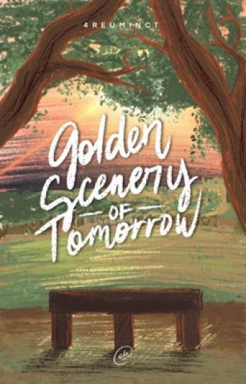
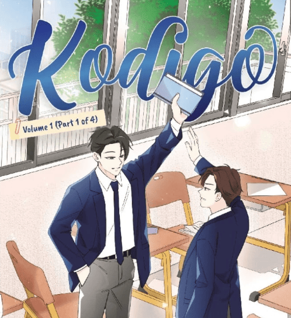
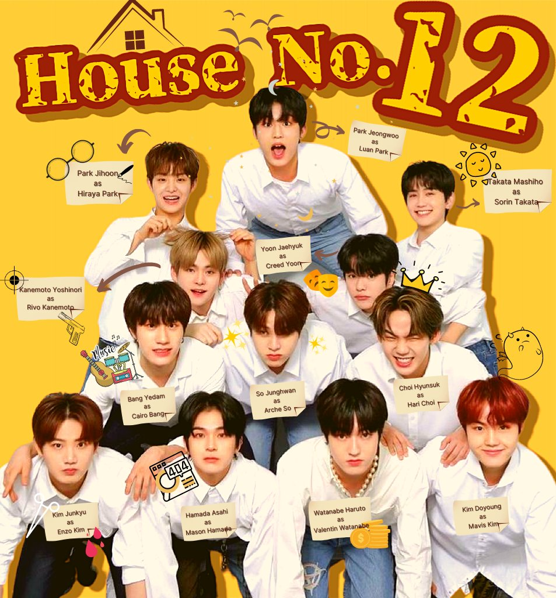
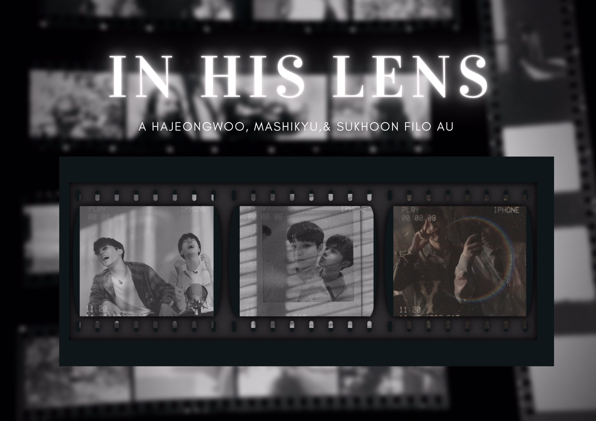
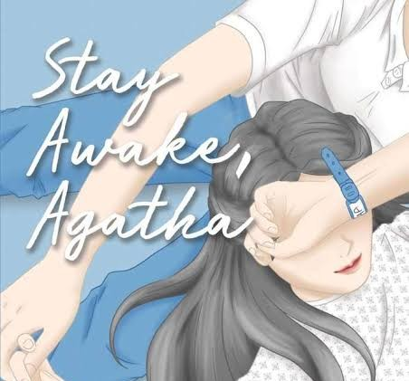
“To live for the hope of it all”

Hello! My name is Jona Rose M. Ajero, and I am currently a first-year Bachelor of Science in Computer Science (BSCS) student at Bicol University. Outside of my academic commitments, I like to unwind with a good balance of relaxing personal hobbies and fun social activities. On days off when I don't have any classes, I'm big on getting my work out of the way first. I like to lock in, finish up all my assignments early, and clear my to-do list so I can enjoy the rest of the day completely stress-free. Once that's done, you'll usually find me hopping online to play Call of Duty with my friends.
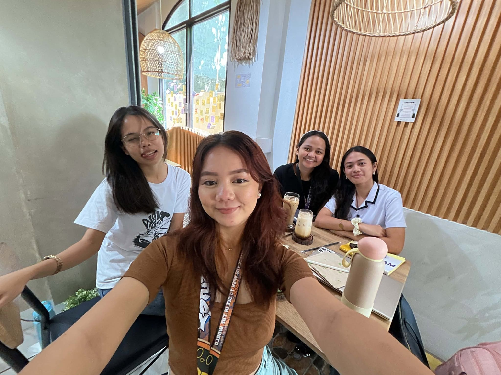
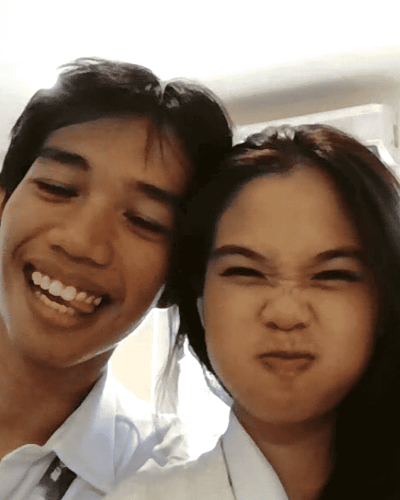
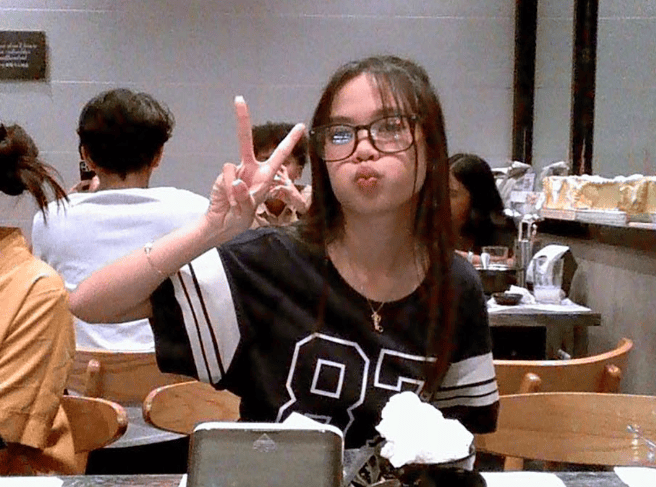
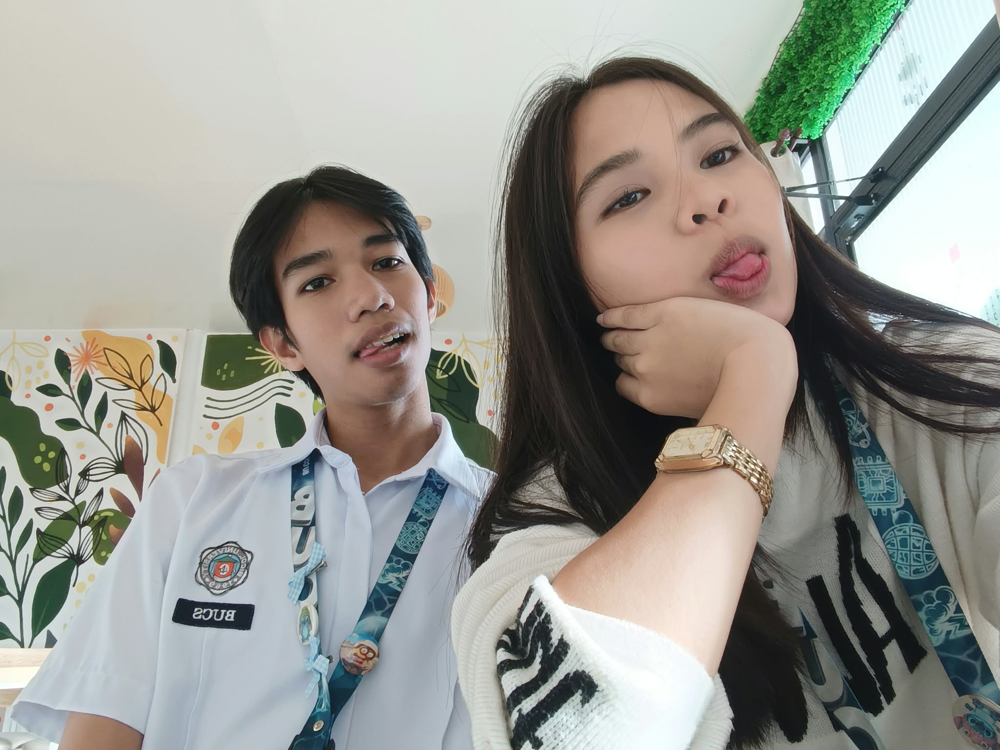
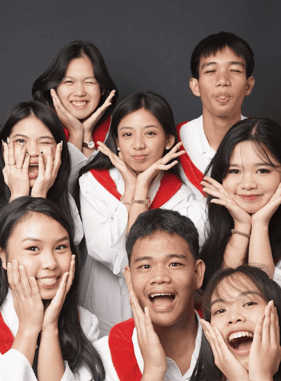
Became fascinated by how everyday apps, websites, and software work behind the scenes.
I decided to take this course to master the programming principles and technical skills to build solutions from scratch.
Fell in love with the unmatched satisfaction of seeing a project come to life.
Drawn to how computing lets me combine analytical thinking with creativity to produce results that are impactful.
Driven to keep building reliable, well-crafted software that solves everyday problems.





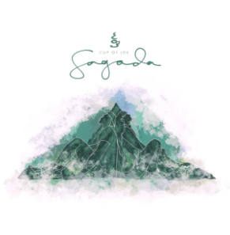
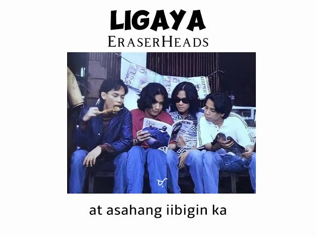
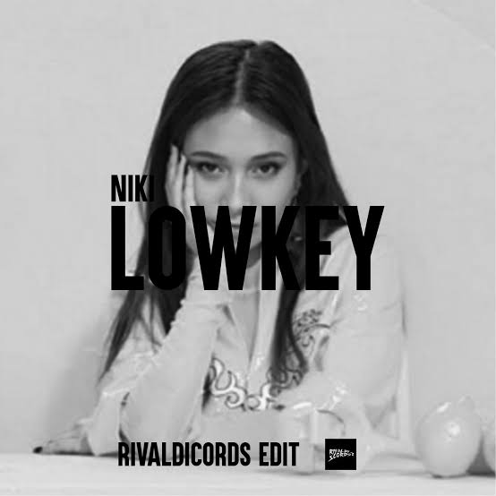
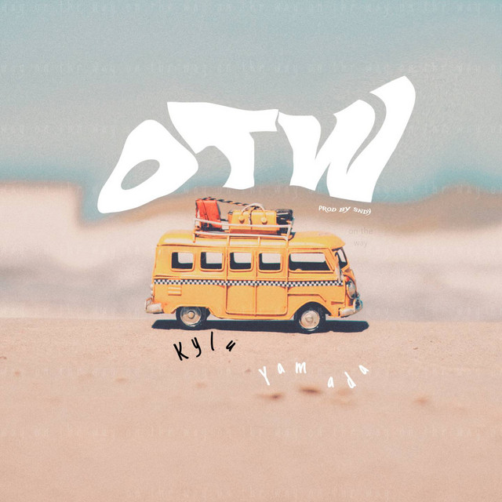
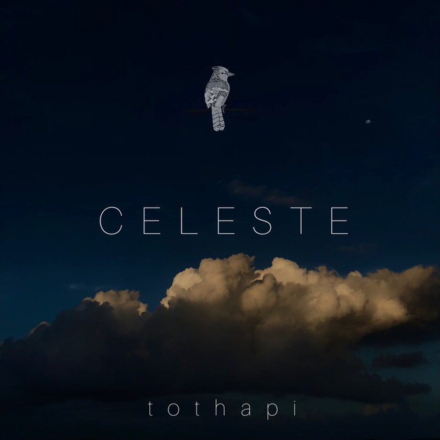
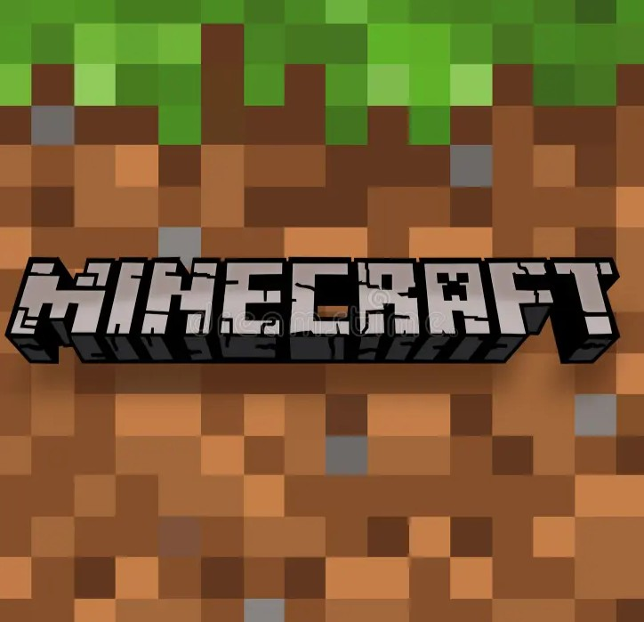
Expanding technical skills from the ground up.
Drive steady technical growth without burning out.
Finishing schoolwork early to protect personal time for unwinding with friends.
| SUBJECT | DAY | TIME |
|---|---|---|
| CS 101 | Computer Programming 1 | Monday Wednesday Thursday |
4:00 PM - 7:00 PM 4:00 PM - 7:00 PM 8:00 AM - 10:00 AM |
| Physics for Computing | Tuesday Thursday |
1:00 PM - 2:30 PM |
| Math Analysis | Tuesday Thursday Friday |
2:30 PM - 4:00 PM 2:30 PM - 4:00 PM 1:00 PM - 3:00 PM |
| CS 102 | Introduction to Computing | Wednesday | 9:00 AM - 12:00 PM |
| Understanding the Self | Friday | 9:00 AM - 12:00 PM |
| NTSP: LTS | Saturday | 1:00 PM - 4:00 PM |
| PathFit | Saturday | 4:00 PM - 6:00 PM |
Revising this activity taught me that true web development requires far more than just coding. It demands creativity and intentional design to build an outstanding webpage. Looking back at my initial draft of the "About Me" page, it was essentially a plain, uninspired list of facts detailing my hobbies and background. Through the revision process, I learned how to transform that basic content into an organized, visually appealing, and highly readable web layout. I focused heavily on refining the overall page structure, establishing a clear visual, and perfecting text alignment and section spacing. These adjustments made the entire presentation look cleaner, more balanced, and professional. Beyond just aesthetic upgrades, this iterative process gave me a deeper understanding of front-end structure and user experience. Seeing the improvement from my original attempt to this refined version highlights clear growth in both my technical HTML/CSS skills and my confidence as a designer.